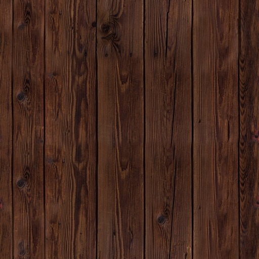

<canvas id="window" width="512" height="512">
</canvas>

<!--  -->

<script>

const texture0 = document.getElementById("texture0");

const canvas = document.getElementById("window");
const ctx = canvas.getContext("2d");
const resolution = 512;
const tolerance = 0.000000001;
const rotationAmount = Math.PI/8;

var playerPos = [-4, 0, 0];
var playerRot = [0, 0, 0];

const emptySet = [
    [
        [0,0,0]
    ], 
    
    [
        [[0,0,0], [0, 0, 0]]
    ]
];
const testTriangles = [
    [
        [3, 0, -3],
        [3, 0, 3],
        [0, -3, -3],
        [0, -3, 3]
    ], 
    
    [
        [[0,1,2], "mirror"],
        [[1,2,3], "mirror"]
    ]
];
const cube = [
    [
        [-1, -1, -1],
        [-1, -1, 1],
        [-1, 1, -1],
        [-1, 1, 1],
        [1, -1, -1],
        [1, -1, 1],
        [1, 1, -1],
        [1, 1, 1]
    ],

    [
        [[0, 2, 4], [255, 255, 255]],
        [[2, 6, 4], [255, 255, 255]],
        [[0, 1, 2], [255, 0, 0]],
        [[1, 3, 2], [255, 0, 0]],
        [[0, 4, 1], [0, 0, 255]],
        [[1, 4, 5], [0, 0, 255]],
        [[4, 6, 5], [255, 127, 0]],
        [[5, 6, 7], [255, 127, 0]],
        [[2, 3, 6], [0, 255, 0]],
        [[3, 7, 6], [0, 255, 0]],
        [[1, 5, 3], [255, 255, 0]],
        [[3, 5, 7], [255, 255, 0]]
    ]
];
const room = [
[
        [-6, -6, -6],
        [-6, -6, 6],
        [-6, 6, -6],
        [-6, 6, 6],
        [6, -6, -6],
        [6, -6, 6],
        [6, 6, -6],
        [6, 6, 6]
    ],

    [
        [[0, 2, 4], [255, 255, 255]],
        [[2, 6, 4], [255, 255, 255]],
        [[0, 1, 2], [255, 0, 0]],
        [[1, 3, 2], [255, 0, 0]],
        [[0, 4, 1], [0, 0, 255]],
        [[1, 4, 5], [0, 0, 255]],
        [[4, 6, 5], [255, 127, 0]],
        [[5, 6, 7], [255, 127, 0]],
        [[2, 3, 6], [0, 255, 0]],
        [[3, 7, 6], [0, 255, 0]],
        [[1, 5, 3], [255, 255, 0]],
        [[3, 5, 7], [255, 255, 0]]
    ]
];
const objectList = [emptySet, cube, room, testTriangles];
const lightList = [[0, 0, 3, 4]];

refreshScreen();

// rendering stuff

function ray(o, r, triangleExclude) {
    var distCheck = Infinity;
    var nearestTriangle = [0,0];
    var pointCheck = [0, 0, 0];
    var normalCheck = [0, 0, 0];
    for(let i=0; i<objectList.length; i++) {
        for(let j=0; j<((objectList[i][1]).length); j++) {
            if ([i,j] == [triangleExclude[0], triangleExclude[1]]){
                continue;
            }
            var triangle = [
                objectList[i][0][objectList[i][1][j][0][0]],
                objectList[i][0][objectList[i][1][j][0][1]],
                objectList[i][0][objectList[i][1][j][0][2]]
            ];
            var n = vector3Normalize(cross(vector3Subtract(triangle[0], triangle[1]), vector3Subtract(triangle[0], triangle[2])));
            var dotnr = dot(n, r);
            if (dotnr == 0) {
                continue;
            }
            var dist = -(dot(n, o)+dot(n, [-triangle[0][0], -triangle[0][1], -triangle[0][2]]))/dotnr;
            if (dist <= 0) {
                continue;
            }
            var point = [o[0]+dist*r[0], o[1]+dist*r[1], o[2]+dist*r[2]];
            if((dist < distCheck) && (isPointInTriangle(triangle, point))) {
                normalCheck = n;
                pointCheck = [point[0], point[1], point[2]];
                distCheck = dist;
                nearestTriangle = [i,j];
            }
        }
    }
    switch (objectList[nearestTriangle[0]][1][nearestTriangle[1]][1]) {
        case "mirror":
            var triangle = [
                objectList[nearestTriangle[0]][0][objectList[nearestTriangle[0]][1][nearestTriangle[1]][0][0]],
                objectList[nearestTriangle[0]][0][objectList[nearestTriangle[0]][1][nearestTriangle[1]][0][1]],
                objectList[nearestTriangle[0]][0][objectList[nearestTriangle[0]][1][nearestTriangle[1]][0][2]]
            ];
            var reflectedVector = vector3Normalize(reflectVector3(r, normalCheck));
            var color = ray([pointCheck[0]+reflectedVector[0]*tolerance, pointCheck[1]+reflectedVector[1]*tolerance, pointCheck[2]+reflectedVector[2]*tolerance], reflectedVector, nearestTriangle);
            return color;

        case "texture":
            var texture = objectList[nearestTriangle[0]][1][nearestTriangle[1]][2];
            var textureCoordinates = objectList[nearestTriangle[0]][1][nearestTriangle[1]][3];
            // ctx.drawImage();
            break;

        default:
            var color = objectList[nearestTriangle[0]][1][nearestTriangle[1]][1];
            var light = calculateLight(pointCheck, normalCheck, [nearestTriangle[0], nearestTriangle[1]]);
            color = [
                color[0]*light,
                color[1]*light,
                color[2]*light
            ];
            return color;
    }
}

function calculateLight(point, normal, triangleExclude){
    var light = 0;
    for(let h=0; h<lightList.length; h++) {
        var r = vector3Subtract(lightList[h], point);
        if(!shadowCheck(point, r, [triangleExclude[0], triangleExclude[1]])) {
            light = light+((lightList[h][3]/((r[0]*r[0])+(r[1]*r[1])+(r[2]*r[2])))*Math.cos(dot(vector3Normalize(r), normal)));
        } else {
            light = 0.01;
        }
    }
    return light;
}

function shadowCheck(o, r, triangleExclude) {
    for(let i=0; i<objectList.length; i++) {
        for(let j=0; j<((objectList[i][1]).length); j++) {
            if ([i,j] == [triangleExclude[0], triangleExclude[1]]){
                continue;
            }
            var triangle = [
                objectList[i][0][objectList[i][1][j][0][0]],
                objectList[i][0][objectList[i][1][j][0][1]],
                objectList[i][0][objectList[i][1][j][0][2]]
            ];
            var n = vector3Normalize(cross(vector3Subtract(triangle[0], triangle[1]), vector3Subtract(triangle[0], triangle[2])));
            var dotnr = dot(n, r);
            if (dotnr == 0) {
                continue;
            }
            var dist = -(dot(n, o)+dot(n, [-triangle[0][0], -triangle[0][1], -triangle[0][2]]))/dotnr;
            if (dist <= tolerance) {
                continue;
            }
            var point = [o[0]+dist*r[0], o[1]+dist*r[1], o[2]+dist*r[2]];
            if((dist < 1) && (isPointInTriangle(triangle, point))) {
                return true;
            }
        }
    }
    return false;
}

function linearToSRGB(color) {
    if ((color[0]+color[1]+color[2])/3 <= 0.798354) {
        return [
            (color[0]*12.92),
            (color[1]*12.92),
            (color[2]*12.92)
        ];
    } else {
        return [
            ((((((color[0]+1)/256)**(1/2.4))*1.055)-0.055)*255),
            ((((((color[1]+1)/256)**(1/2.4))*1.055)-0.055)*255),
            ((((((color[2]+1)/256)**(1/2.4))*1.055)-0.055)*255)
        ];
    }
}


// math stuff

function cross(a, b){
    return [
        (a[1]*b[2])-(a[2]*b[1]),
        (a[2]*b[0])-(a[0]*b[2]),
        (a[0]*b[1])-(a[1]*b[0])
    ];
}

function dot(a, b){
    return (a[0]*b[0])+(a[1]*b[1])+(a[2]*b[2]);
}

function vector3Subtract(a, b){
    return [
        a[0]-b[0],
        a[1]-b[1],
        a[2]-b[2]
    ];
}

function vector3Normalize(v) {
    var mag = Math.sqrt((v[0]*v[0])+(v[1]*v[1])+(v[2]*v[2]));
    return [
        v[0]/mag,
        v[1]/mag,
        v[2]/mag
    ];
}

function rotToVector3(rot){
    return [
        Math.cos(rot[2])*Math.cos(rot[1]),
        Math.sin(rot[2])*Math.cos(rot[1]),
        Math.sin(rot[1])
    ];
}

function reflectVector3(vector, normal) {
    // formula gotten from the wikipedia page for Specular reflection
    var dot0 = dot(vector, normal);
    return vector3Normalize(vector3Subtract(vector, [2*normal[0]*dot0, 2*normal[1]*dot0, 2*normal[2]*dot0]));
}

function rotateVector3(vector, rotation){
    var mag = Math.sqrt((vector[1]*vector[1])+(vector[2]*vector[2]));
    var rot = 0;
    if (vector[2] > 0) {
        rot = Math.acos(vector[1]/mag);
    } else {
        rot = -Math.acos(vector[1]/mag);
    }
    var newVector3 = [
        vector[0],
        Math.cos(rot+rotation[0])*mag,
        Math.sin(rot+rotation[0])*mag
    ];

    mag = Math.sqrt((newVector3[0]*newVector3[0])+(newVector3[2]*newVector3[2]));
    if (newVector3[2] > 0) {
        rot = Math.acos(newVector3[0]/mag);
    } else {
        rot = -Math.acos(newVector3[0]/mag);
    }
    newVector3 = [
        Math.cos(rot+rotation[1])*mag,
        newVector3[1],
        Math.sin(rot+rotation[1])*mag
    ];

    mag = Math.sqrt((newVector3[0]*newVector3[0])+(newVector3[1]*newVector3[1]));
    if (newVector3[1] > 0) {
        rot = Math.acos(newVector3[0]/mag);
    } else {
        rot = -Math.acos(newVector3[0]/mag);
    }
    newVector3 = [
        Math.cos(rot+rotation[2])*mag,
        Math.sin(rot+rotation[2])*mag,
        newVector3[2]
    ];
    
    return newVector3;
}

function upVector3(rotation){
    var cosr0 = Math.cos(rotation[0]);
    var newVector3 = [
        Math.sin(rotation[1])*cosr0,
        Math.sin(rotation[0]),
        Math.cos(rotation[1])*cosr0
    ];

    var mag = Math.sqrt((newVector3[0]*newVector3[0])+(newVector3[1]*newVector3[1]));
    var rot;
    if (mag != 0) {
        if (newVector3[1] > 0) {
            rot = Math.acos(newVector3[0]/mag);
        } else {
            rot = -Math.acos(newVector3[0]/mag);
        }
        newVector3 = [
            Math.cos(rot+rotation[2])*mag,
            Math.sin(rot+rotation[2])*mag,
            newVector3[2]
        ];
    }
    return newVector3;
}

function isPointInTriangle(triangle, point){
    // based on heron's formula
    // wildly ineficient. fix needed
    var sab = vector3Subtract(triangle[0], triangle[1]);
    var sbc = vector3Subtract(triangle[1], triangle[2]);
    var sca = vector3Subtract(triangle[2], triangle[0]);
    var spa = vector3Subtract(triangle[0], point);
    var spb = vector3Subtract(triangle[1], point);
    var spc = vector3Subtract(triangle[2], point);
    var dab = Math.sqrt((sab[0]*sab[0])+(sab[1]*sab[1])+(sab[2]*sab[2]));
    var dbc = Math.sqrt((sbc[0]*sbc[0])+(sbc[1]*sbc[1])+(sbc[2]*sbc[2]));
    var dca = Math.sqrt((sca[0]*sca[0])+(sca[1]*sca[1])+(sca[2]*sca[2]));
    var dap = Math.sqrt((spa[0]*spa[0])+(spa[1]*spa[1])+(spa[2]*spa[2]));
    var dbp = Math.sqrt((spb[0]*spb[0])+(spb[1]*spb[1])+(spb[2]*spb[2]));   
    var dcp = Math.sqrt((spc[0]*spc[0])+(spc[1]*spc[1])+(spc[2]*spc[2])); 
    var sabc = (dab+dbc+dca)/2;
    var spbc = (dbp+dbc+dcp)/2;
    var sapc = (dap+dcp+dca)/2;
    var sabp = (dab+dbp+dap)/2;
    var abc = Math.sqrt(sabc*(sabc-dab)*(sabc-dbc)*(sabc-dca));
    var pbc = Math.sqrt(spbc*(spbc-dbp)*(spbc-dbc)*(spbc-dcp));
    var apc = Math.sqrt(sapc*(sapc-dap)*(sapc-dcp)*(sapc-dca));
    var abp = Math.sqrt(sabp*(sabp-dab)*(sabp-dbp)*(sabp-dap));

    var pabc = pbc+apc+abp;
    
    if (pabc <= abc+tolerance) {
        return true;
    } else {
        return false;
    }
}


// window stuff

// movement code
window.addEventListener("keypress", function (event) {
    
    if (event.defaultPrevented) {
        return; // Do nothing if the event was already processed
    }

    switch (event.key) {
        case "q": // down
            var up = upVector3(playerRot);
            playerPos[0] = playerPos[0]+up[0];
            playerPos[1] = playerPos[1]+up[1];
            playerPos[2] = playerPos[2]-up[2];
            break;
        case "w": // forward
            var cosr1 = Math.cos(playerRot[1]);
            playerPos[0] = playerPos[0]+(Math.cos(playerRot[2])*cosr1);
            playerPos[1] = playerPos[1]+(Math.sin(playerRot[2])*cosr1);
            playerPos[2] = playerPos[2]+(Math.sin(playerRot[1]));
            break;
        case "e": // up
            var up = upVector3(playerRot);
            playerPos[0] = playerPos[0]-up[0];
            playerPos[1] = playerPos[1]-up[1];
            playerPos[2] = playerPos[2]+up[2];
            break;
        case "a":  // left
            var cosr0 = Math.cos(playerRot[0]);
            playerPos[0] = playerPos[0]+(Math.sin(playerRot[2])*cosr0);
            playerPos[1] = playerPos[1]-(Math.cos(playerRot[2])*cosr0);
            playerPos[2] = playerPos[2]-(Math.sin(playerRot[0]));
            break;
        case "s": // back
            var cosr1 = Math.cos(playerRot[1]);
            playerPos[0] = playerPos[0]-(Math.cos(playerRot[2])*cosr1);
            playerPos[1] = playerPos[1]-(Math.sin(playerRot[2])*cosr1);
            playerPos[2] = playerPos[2]-(Math.sin(playerRot[1]));
            break;
        case "d": // right
            var cosr0 = Math.cos(playerRot[0]);
            playerPos[0] = playerPos[0]-(Math.sin(playerRot[2])*cosr0);
            playerPos[1] = playerPos[1]+(Math.cos(playerRot[2])*cosr0);
            playerPos[2] = playerPos[2]+(Math.sin(playerRot[0]));
            break;

        case "u": // roll left
            playerRot[0] = playerRot[0]+rotationAmount;
            break;
        case "i": // pitch up
            playerRot[1] = playerRot[1]+rotationAmount;
            break;
        case "o": // roll right
            playerRot[0] = playerRot[0]-rotationAmount;
            break;
        case "j": // yaw left
            playerRot[2] = playerRot[2]-rotationAmount;
            break;
        case "k": // pitch down
            playerRot[1] = playerRot[1]-rotationAmount;
            break;
        case "l": // yaw left
            playerRot[2] = playerRot[2]+rotationAmount;
            break;

        default:
            return;
    }

    event.preventDefault();
    refreshScreen();
}, true);

function castRays() {
    for (let i = 0; i < resolution; i++) {
        for (let j = 0; j < resolution; j++) {
            var rayRot = rotateVector3(vector3Normalize([1, (2*j/resolution)-1, (4*i/resolution)-3]), playerRot);
            var color = ray(playerPos, rayRot, [0,0]);
            color = linearToSRGB(color);
            color = `rgb(${color[0]} ${color[1]} ${color[2]})`
            ctx.fillStyle = color;
            ctx.fillRect(j*(512/resolution), 512-i*(512/resolution), (j+1)*(512/resolution), 512-(i-1)*(512/resolution));
        }
    }
}

function refreshScreen() {
    castRays();
}

</script>